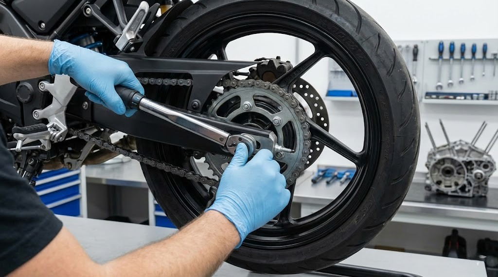
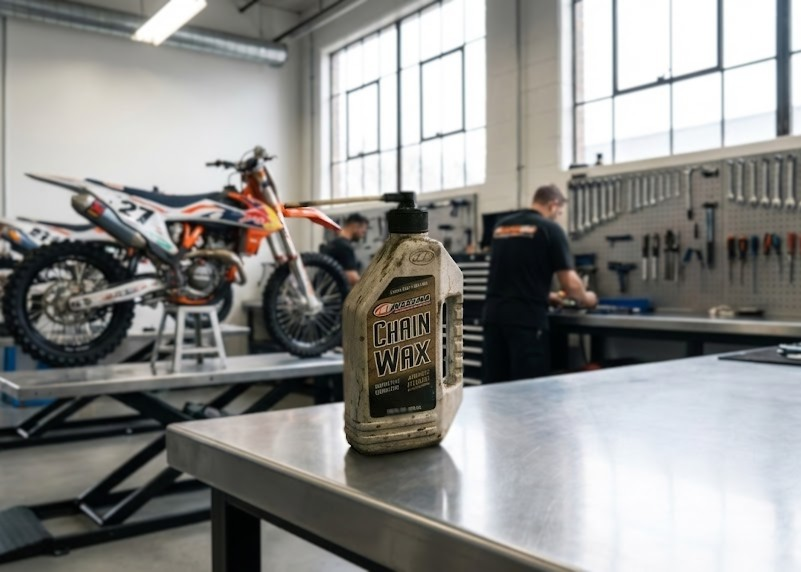

Keep your machine running at peak performance. Master the essential maintenance routines and pre-ride checks to ensure safety and longevity.
A well-maintained motorcycle is a safe motorcycle. Routine checks not only save you money on expensive mechanical repairs, but they can also save your life when you're out on the highway. Learn the fundamentals of bike health here.
Check tire pressure (PSI) when cold. Inspect tread depth for wear indicators, and look for nails, cracks, or loose spokes.
Test your front and rear brake levers for firmness. Ensure the clutch cable is smooth and the throttle snaps back instantly when released.
Verify high and low beams, left and right turn signals, and test both front and rear brake switches to ensure your brake light activates.
Keep the bike perfectly upright to check the engine oil level in the sight glass. Inspect coolant levels and brake fluid reservoirs.
Inspect the suspension forks for oil leaks. Check the drive chain for proper tension (slack) and ensure it is well lubricated and free of rust.
Ensure the kickstand springs back firmly and doesn't droop. A loose kickstand switch can kill your engine unexpectedly while riding.

The drive chain is one of the hardest working parts of your motorcycle. Neglecting it leads to poor power transfer, rough shifting, and in worst-case scenarios, a snapped chain at high speeds. Regular cleaning and lubrication is mandatory.
A simple 4-step guide to cleaning and lubricating your drive chain.
Put the bike on a rear stand. Spray a dedicated chain cleaner (or kerosene) over the chain and use a grunge brush to scrub away dirt, old wax, and road debris. Wipe dry with a rag.
While turning the rear wheel, look for tight spots or stiff links. Check the front and rear sprocket teeth—if they look hooked or overly sharp, it's time to replace the whole set.
Find the midpoint of the chain between the sprockets and push up on it. Check your owner's manual for the correct slack measurement (usually around 1.2 to 1.5 inches) and adjust the axle blocks if necessary.
Ideally, do this after a short ride while the chain is warm. Spray high-quality chain lube specifically on the inside of the lower chain run, aiming at the O-rings. Wipe off any excess to prevent fling onto your tire.